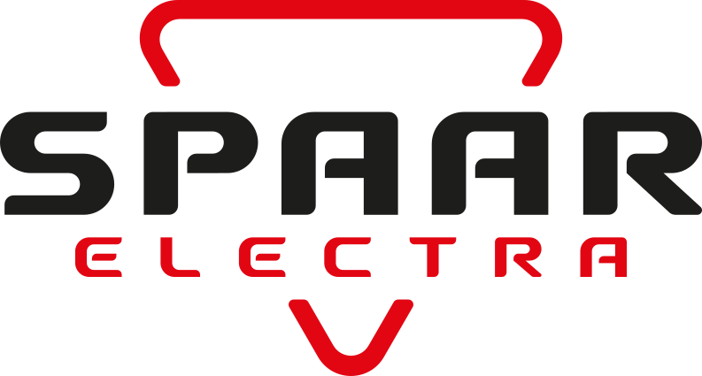

De Spaar Electra Urenregistratie-app is een interne bedrijfsapp voor medewerkers van Spaar Electra B.V. (Poortland 34, 1046 BD Amsterdam) om werktijden te registreren en verlof aan te vragen.
Alleen wat nodig is voor de urenregistratie:
De gegevens worden opgeslagen bij Supabase (datacenter in de Europese Unie) en zijn alleen toegankelijk voor jou en de administratie van Spaar Electra. Er worden geen gegevens gedeeld met of verkocht aan derden, en de app bevat geen advertenties of tracking van derden.
Urenregistraties worden bewaard zolang dat nodig is voor de loonadministratie en wettelijke bewaarplichten. Bij uitdiensttreding wordt je account gedeactiveerd.
Je kunt je geregistreerde gegevens inzien via de app. Voor inzage, correctie of verwijdering kun je terecht bij de administratie van Spaar Electra via info@spaarelectra.nl.
Laatst bijgewerkt: juli 2026